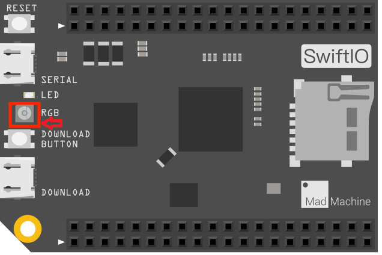
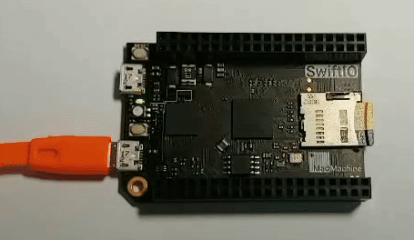

Blink
Let's first come to an easy beginner project - blink the onboard LED. This example shows the simplest thing you can do with just a SwiftIO board to see physical output: it blinks the on-board REG LED.
What you need
- SwiftIO board
Circuit

image developed using Fritzing. For more circuit examples, see the Fritzing project page
For this project, we only need the SwiftIO board.
There is a built-in RGB LED on the board. You can control it using the methods in DigitalOut class.
Note: the onboard LED will be turned on when you apply a low voltage.
Just plug the board to your computer through a USB cable after you finished code.
Schematic
click the image to enlarge
Code
It's time for the code. Let's see how it works.You can find the example code at the bottom left corner of IDE:  > GettingStarted > Blink.
> GettingStarted > Blink.
// Import the library to enable everything in it, like relevant classes and methods.
// This is first step for your coding process.
import SwiftIO
// Declare a constant. You may choose any descriptive name you like.
// Initialize the onboard green LED.
// The Id of onboard LED should be capitalized.
let green = DigitalOut(Id.GREEN)
// In the dead loop, the code will run over and over again.
while true {
// Output 3.3V to turn off the green LED.
green.write(true)
// Pause for a second. Or, you won't notice LED state change.
// During this period, the board will do nothing but just wait.
sleep(ms: 1000)
// Output 0V to turn on the green LED.
green.write(false)
sleep(ms: 1000)
}
Video

See Also
- Id - Enumerations, public enum Id : UInt32
- sleep(ms:) - function suspend the processor’s work in a given time period (in millisecond).
- DigitalOut() - DigitalOut class is used to set a High or Low voltage output to a digital output pin
References
Last revision 2020/09/04 by Johnson